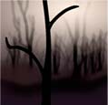

About Surrealism Extract from Wikipedia
Surrealism is based on the belief in the superior reality of certain forms of previously neglected associations, in the omnipotence of dream, in the disinterested play of thought. It tends to ruin once and for all other psychic mechanisms and to substitute itself for them in solving all the principal problems of life. Encyclopedia
There are two forms of Surrealism, automatism and verism. Automatism deals with the suppression of the consciousness, to use the subconscious. There is more of a focus on feeling, and automatism is unburdened with meaning. It has been described as "dictation of thoughts without control of the mind". Automatist paintings often have biomorphic (ameba-like) shapes, and give off a dreamlike feeling. Yves Tanguy's paintings are a perfect example of this form, like such as Multiplication of the Arcs.
The veristic branch of Surrealism allows the subconscious to surface in order to interpret meaning. It uses images as a link between abstract spiritual realities and real forms of the natural world. In other words, veristic paintings are much closer to reality than automatist paintings. They hold some truth, portraying recognizable scenes and objects that are taken out of natural context, resulting in a dreamscape. Salvador Dali is the most well known artist who portrays identifiable objects in strange settings. His "hand painted dream photographs" are so meticulously detailed, they almost look real, although they are so fantastic and dreamlike. He drew upon the terrors of his childhood to put his nightmares on canvas. Another veristic artist is Rene Magritte (The Human Condition, Portrait, and Time Transfixed are good examples of veristic Surrealism). The Human Condition I and II portray a canvas which lines up perfectly with the landscape behind it. Reality and the painting are so close, it makes you question the difference. More »